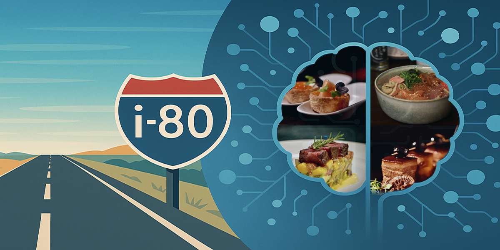

My Road to i80
How it All Began
This is the personal story behind i80agent — from cooking experiments and memory to the broader idea of domain-specific AI agents grounded in private knowledge.

How it All Began
This is the personal story behind i80agent — from cooking experiments and memory to the broader idea of domain-specific AI agents grounded in private knowledge.

I love to cook. Not by the book, but with intuition, memory, and whatever ingredients are at hand. Over the years, I have built a rich personal archive: dishes invented on the fly, surprising flavor combinations, and moments of improvisation captured in photos, notes, and conversations.
Then, in January 2023, I encountered ChatGPT. I was blown away by its ability to answer questions and generate ideas. I would ask about cuisines, techniques, or flavor pairings, and the responses were impressive. But when I asked, “What did I cook that night with salmon and miso?”, the reply came through as: “I don't have access to your personal cooking history.”
For all their brilliance, large language models did not know my stories. They could not access the unique experiences, preferences, and memories that make me who I am.
That is when it hit me: what if I could build an AI that feels like an LLM but knows what I know? Not a generic model trained on the internet, but a personal system capturing my cooking stories, thought processes, and unique way of seeing the world.
I imagined an AI that could answer, “What would I have cooked with those ingredients?” or even “How would I have approached that problem?” — not based on generic data, but on my own lived experience.
This led me to the idea of a domain-aware AI Agent: not just a chatbot, but a system that can understand a question, search trusted knowledge, decide how to respond, and stay grounded in the right context. I realized the goal was not just to build another chatbot, but to create AI systems grounded in trusted knowledge, guided workflows, and real-world expertise.
While building the cooking agent, I thought about a hotel project I had worked on before. The problem was the same: a wealth of internal knowledge — policies, procedures, local expertise, guest preferences — that no general AI could access or understand.
That is when I realized cooking was just the beginning. Any domain with private knowledge and real judgment has the same gap. A hotel concierge. An HR team. A product support desk. The knowledge exists — it just is not connected to anything that can use it.
Building an AI Agent that knows a person, a business, or a domain is no small task. It requires blending the expressive power of LLMs with curated knowledge, reliable retrieval, careful orchestration, and clear boundaries.
But that is the road I am on: a path to AI that does not just answer, but remembers, reasons, acts, reflects, and resonates.
The name comes from Interstate 80 — a highway I used to live near in Salt Lake City, Utah. It took me everywhere: to work, into the mountains, toward the city center. Always the same road, sometimes a different destination. That felt right for what I was building — a system that takes any question and finds the most direct route to a trusted answer.
This i80.com website documents my road to i80. Through this space, I will share what I am learning along the way: the breakthroughs and the dead ends, the tools and techniques, and the insights that emerge when intuition meets iteration.
I do not know exactly where this road leads yet. But I believe trusted, domain-specific AI systems will become increasingly important — and i80agent is my way of exploring that future.
i80agent is the next step in this journey — a platform to make knowledge-based AI agents accessible to others.
See My Progress